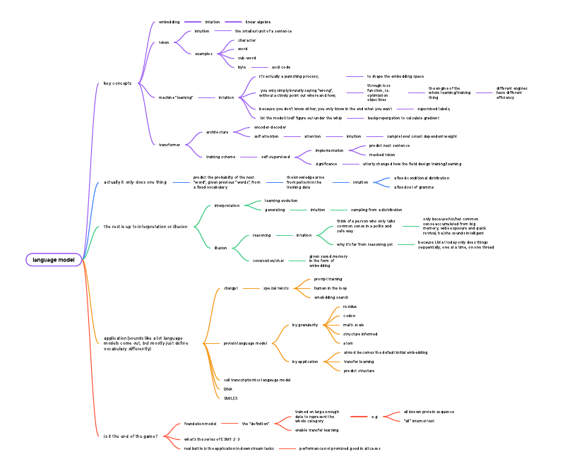
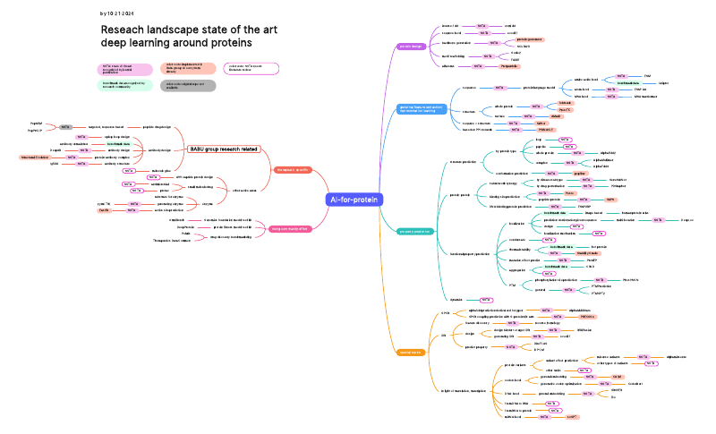
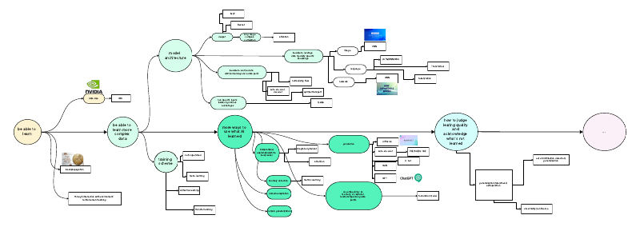
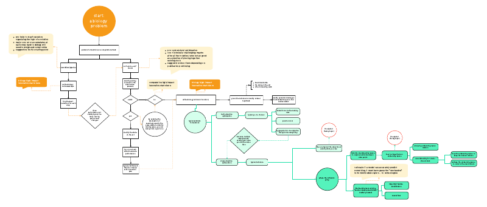

Mind Maps Gallery#
Visual Conceptual Frameworks#
These mind maps represent visual summaries and conceptual frameworks that emerged from our journal club discussions. Each mind map captures key relationships, hierarchies, and connections between important AI concepts in biology, providing intuitive visual guides for understanding complex topics.
Gallery#
The following mind maps represent collective insights from multiple discussion sessions. Click on any image to view the full PDF.
AI View by Data Type#
 Comprehensive framework organizing AI approaches by the types of biological data they process.
Comprehensive framework organizing AI approaches by the types of biological data they process.
Framework to Scrutinize Foundation Models#
 Systematic approach for evaluating and analyzing foundation models in biological contexts.
Systematic approach for evaluating and analyzing foundation models in biological contexts.
Language Models#
 Conceptual overview of language models and their applications in biological sequence analysis.
Interpretable AI#
 Framework for understanding and implementing interpretable AI methods in biological research.
Framework for understanding and implementing interpretable AI methods in biological research.
AI for Protein (Dedicated)#
 Specialized AI approaches and tools designed specifically for protein analysis and prediction.
Protein Design & Engineering#
 Comprehensive framework for AI-driven protein design and engineering methodologies.
Comprehensive framework for AI-driven protein design and engineering methodologies.
Building Block Field Evolution Trajectory#
 Mapping the evolutionary trajectory of key building blocks in AI for biology.
Dry Lab - Wet Lab Synergy#
 Framework for optimizing collaboration between computational and experimental approaches.
Framework for optimizing collaboration between computational and experimental approaches.
Using the Ecosystem for a Project#
 Strategic guide for leveraging the broader AI/biology ecosystem in research projects.
Usage Notes#
Click on any image to view the full PDF version
Each mind map represents synthesized insights from journal club discussions
Mind maps are living documents that evolve as understanding deepens
Contributing#
Mind maps in this gallery represent collaborative efforts from journal club participants. New mind maps are added as discussions generate novel conceptual frameworks or when existing frameworks require significant updates based on new insights.